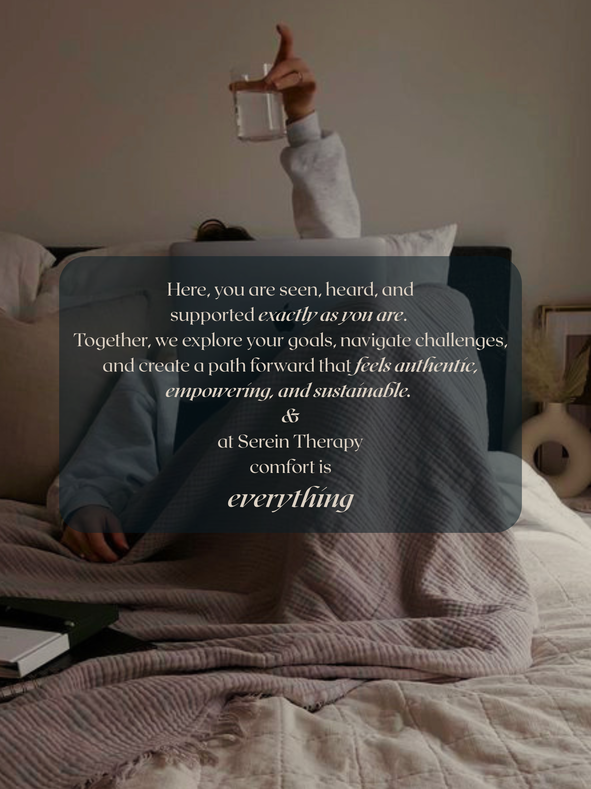

Serein Therapy provides virtual counselling throughout Canada for teens and adults navigating chronic illness, disability, chronic pain, medical trauma, caregiving, anxiety, grief, and changes in identity. Therapy offers a thoughtful, collaborative space to process what has happened, strengthen self-trust, and move forward in ways that honour your health, capacity, relationships, and values.
If you’re curious what working together might be like, this is a good place to start.

Navigate the emotional and physical challenges of chronic conditions while building tools to honour your energy, manage stress, and reconnect with confidence in your body.
Support for processing surgeries, procedures, and difficult medical experiences through a trauma and nervous-system-informed approach.
Space to explore burnout, guilt, and emotional load while learning how to care for yourself alongside caring for others.
Individualized support that honours your strengths, needs, communication style, and lived experience while building coping skills, confidence, and emotional awareness.
Explore communication, boundaries, relationship patterns, and ways of creating connections that feel more respectful and sustainable.
Develop practical tools for working with anxious or depressive thoughts, difficult emotions, and patterns that may be making everyday life feel heavier.
Support for emotional exhaustion, overwhelm, people-pleasing, chronic over-functioning, and the pressure to keep pushing beyond your capacity.
Gentle support for navigating changes in identity that can come with illness, disability, loss, major transitions, or becoming someone different from who you expected to be.
Explore the pressures, relationships, transitions, expectations, and experiences that can shape women's emotional wellbeing.
Build a greater understanding of your emotional responses and develop practical ways to move through difficult emotions with more steadiness and self-compassion.
ACT helps you make space for difficult thoughts and feelings while taking actions that move you toward what matters most.
Narrative therapy allows you to explore your story, separate yourself from problems, and rewrite your experiences in a more empowering way.
Somatic therapy is a body-focused approach that helps you notice and work with physical sensations, nervous system responses, and emotions to build a greater sense of regulation and safety.
I’m Doré Schubert, founder of Serein Therapy, a virtual practice dedicated to supporting people navigating complex life transitions. I am a Canadian Certified Cousellor (CCC) and graduated with a Master's of Arts in Counselling Psychology (honours). I built this practice to create a space where therapy feels safe, validating, and practical because you deserve more than generic advice or “one-size-fits-all” solutions.
My approach is flexible and person-centered, meaning I meet you where you are, adapt to your goals, and give you tools that actually help you navigate pain, stress, or life changes. I focus on buliding a trusting relationship where you feel safe to be vulnerable and heard.
I specialize in supporting people with chronic illness, intellectual disability, and major life transitions, including those adjusting to new diagnoses or living with long-term pain. If you’re looking for a therapist who understands what it’s like to manage life and health simultaneously, who validates your experience, helps you notice patterns, and grow in a meaningful way, you’re in the right place.
Please note that a minimum of 24 hours’ notice is required for any appointment cancellation or rescheduling. Appointments missed or changed with less than 24 hours’ notice may be subject to the full session fee.